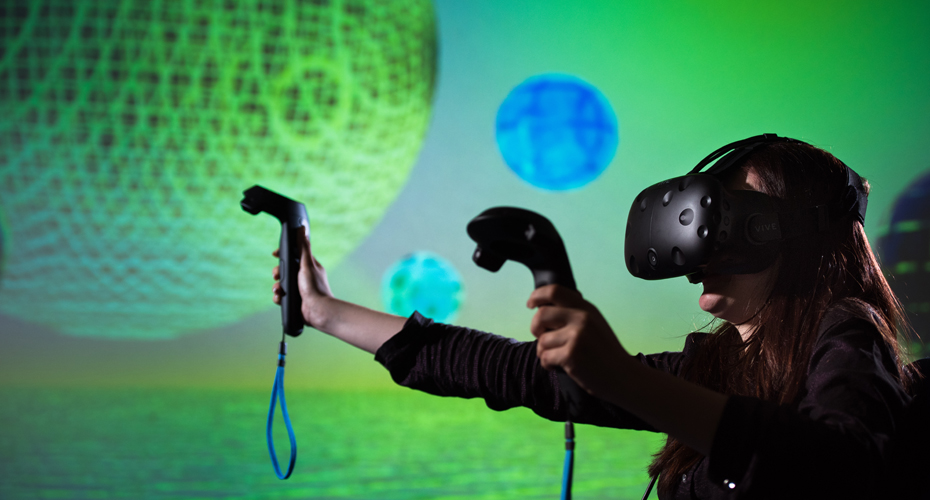

Welcome to the state-of-the-art facilities provided by the UG Department of Computer Science. Our commitment to fostering a dynamic learning environment is reflected in the resources we offer to our students and faculty.
Facilities in a computer science department are crucial components that enhance the learning, research, and collaborative aspects of the academic environment. These state-of-the-art resources include well-equipped computer labs with the latest hardware and software, providing students with hands-on experience in programming and software development. A high-performance computing cluster enables computationally intensive tasks and advanced research projects. Specialized research labs focus on diverse areas like artificial intelligence, machine learning, robotics, and cybersecurity, fostering innovation and collaboration among faculty and students. Collaboration spaces promote teamwork and creativity, while a robust networking infrastructure ensures secure and seamless connectivity. Library resources, including textbooks, journals, and online databases, support academic exploration. Virtual labs offer practical learning experiences through simulations and experiments. Conference and seminar rooms facilitate intellectual discussions and industry exposure, and a student lounge provides a comfortable space for relaxation and socializing. These facilities collectively create a dynamic and comprehensive ecosystem, nurturing a vibrant community of learners and researchers within the computer science department.
Our department boasts well-equipped computer labs with the latest hardware and software. These labs provide students with hands-on experience and a conducive environment for programming and experimentation.
Computer labs within a computer science department serve as vital hubs for hands-on learning, practical application of programming concepts, and cutting-edge research. Equipped with state-of-the-art hardware and software, these labs provide students with access to programming environments, networking facilities, and specialized software tailored to various disciplines within computer science, such as artificial intelligence and machine learning. The labs foster collaborative spaces, encouraging teamwork and group projects. Internet access, printing and scanning facilities, and extended hours ensure that students can engage in research and coursework effectively. With support staff available for assistance, computer labs contribute to the dynamic and innovative learning environment of the computer science department, bridging the gap between theoretical knowledge and real-world application.
We provide access to high-performance computing resources, ensuring that students and researchers can tackle computationally intensive tasks and engage in cutting-edge research.
Explore our dedicated research labs and centers focusing on areas such as artificial intelligence, robotics, computer vision, and cybersecurity. Faculty and students collaborate on groundbreaking research projects, contributing to advancements in the field.